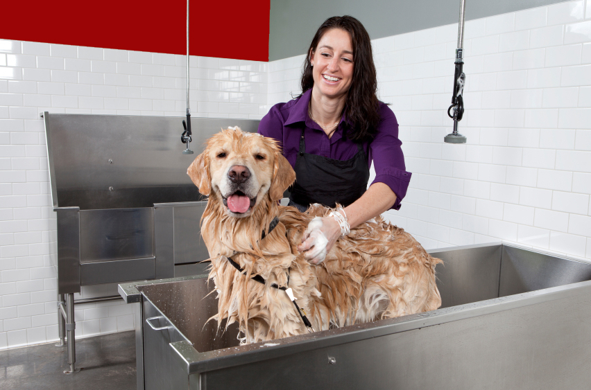
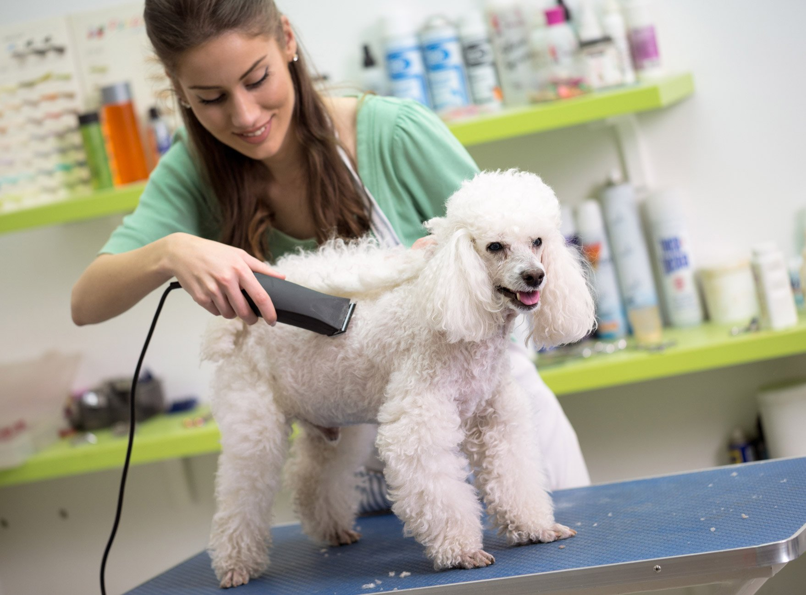
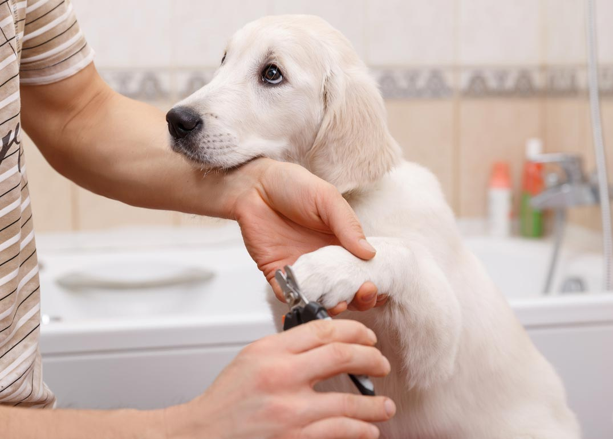

Our professional wash service keeps your furry friend clean, fresh, and happy at all times. We use gentle, high-quality shampoos and conditioners that are kind to the skin while deeply cleansing and nourishing the coat, leaving it soft, shiny, healthy, and smelling great. Each wash includes a thorough rinse, careful drying, and attention to sensitive areas to ensure your pet is comfortable throughout. We create a calm, stress-free environment so every visit feels relaxing and enjoyable, helping your pet look their best and feel even better.

Our expert groomers give your dog a stylish, comfortable haircut tailored to their breed, coat type, and individual needs. We take the time to understand the look that suits your pet best, using gentle handling and precise techniques to ensure a safe and stress-free experience. Each grooming session includes careful trimming, shaping, and attention to detail around sensitive areas, leaving your dog looking neat, feeling comfortable, and full of confidence.

Keep your dog’s nails healthy, safe, and well maintained with our professional nail trimming service. We carefully trim and file each nail using gentle techniques to prevent discomfort, overgrowth, or injury, while taking extra care around sensitive areas. Regular nail care helps improve posture and mobility, allowing your pet to walk and play comfortably. Our calm, stress-free approach ensures your dog feels relaxed throughout, keeping them happy, active, and at their best.